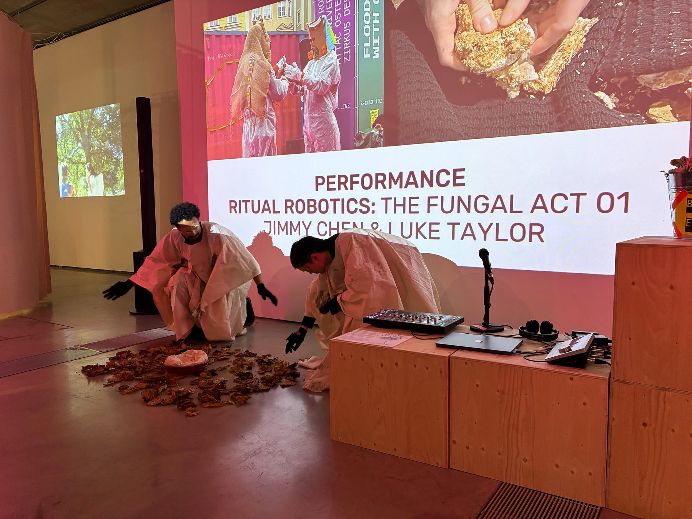
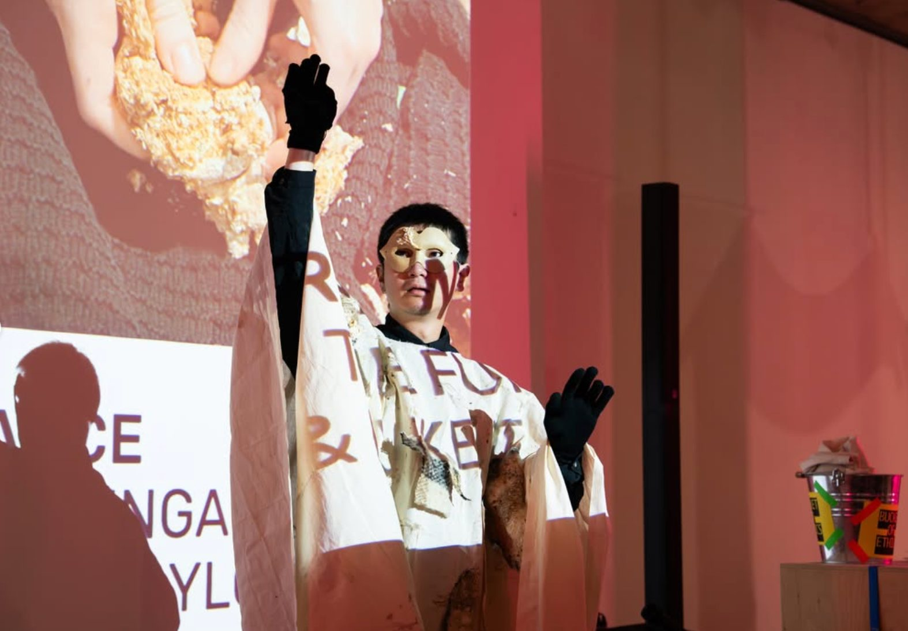
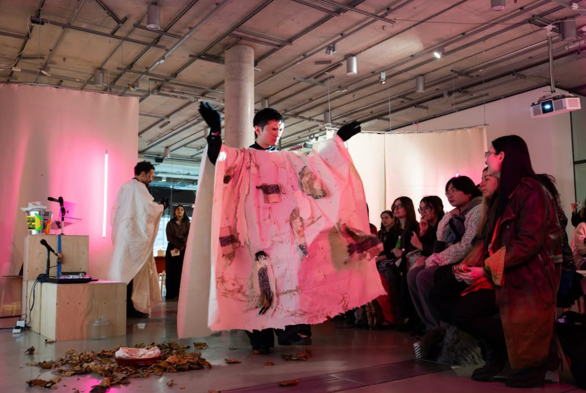
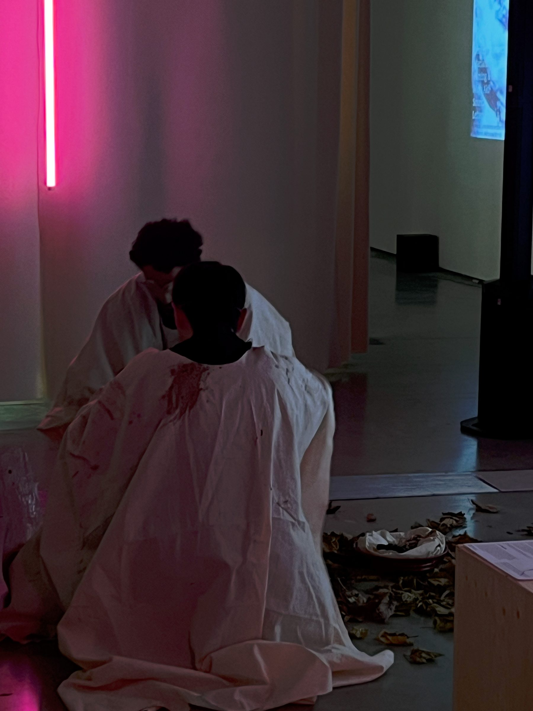
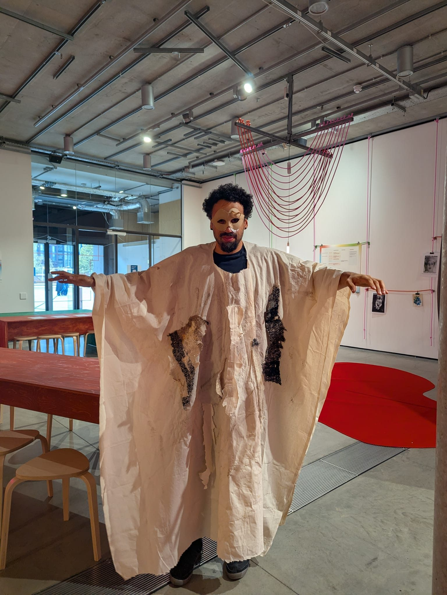
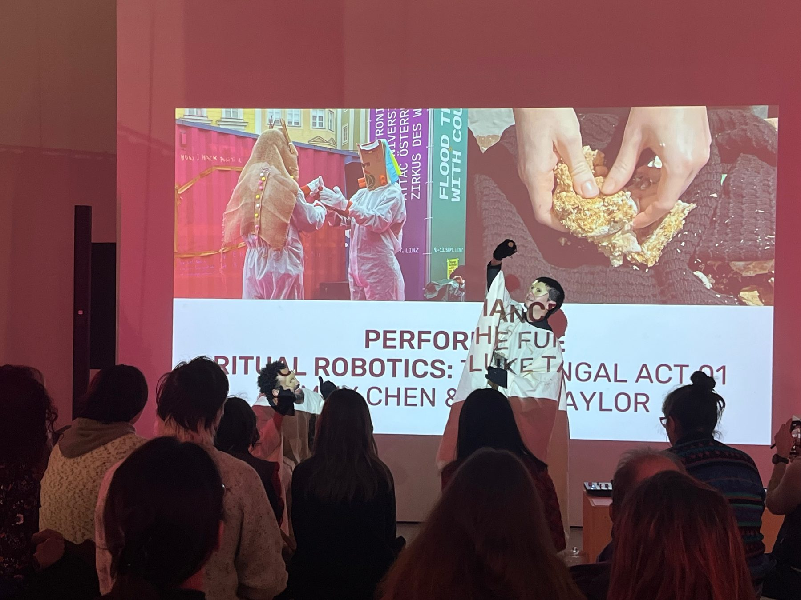

Ritual Robotics: The Fungal Act 01

The Fungal Act 01 is an alternative version of Ritual Robotics: Act 01, first performed at Ars Electronica in 2026. Here the ritual turns towards fungi, following Jimmy’s pursuit of a more-than-human embodiment made in collaboration with them.
The script opens with the movements of mushroom foraging. The performers wear sensor gloves that stream the rotation and acceleration of their hands to Ableton Live, where the data becomes sound. That sound in turn shapes how the performers move.



The second stage of the act is cultivation. Mushroom substrate is prepared and divided by the performers on stage, and the glass containers become a new site for the mushrooms to grow, afterwards, in Jimmy’s home.
The piece is an attempt to bring contemporary ritual, digital technology, robotics and the more-than-human together in one narrative performance. It stages a negotiation between digital technology and more-than-human embodiment.


Credits
- Performers
- Jimmy Chen, Luke Taylor
- Sensor gloves
- Jimmy Chen, Ruiyang Wang, Joseph Whitmore
- Costume and sound
- Jimmy Chen
- Photography
- Jamie Pazmino